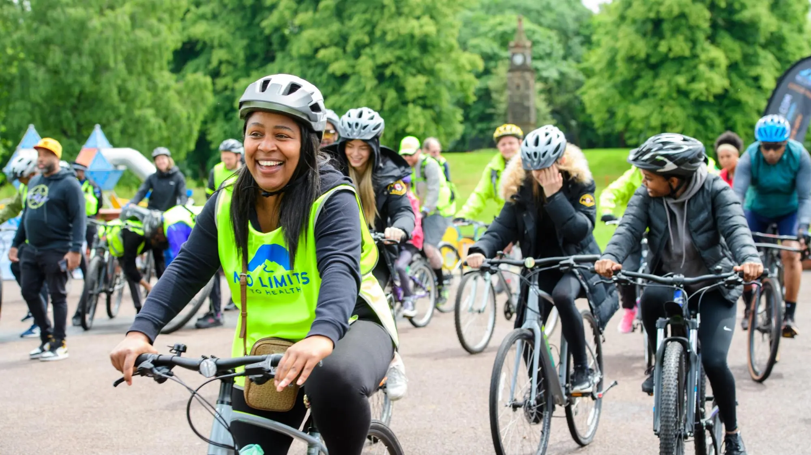
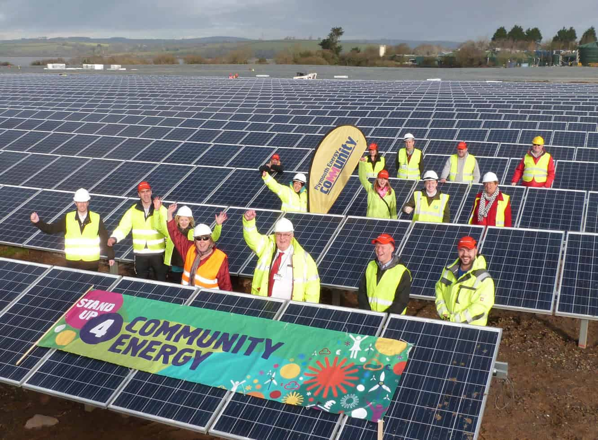
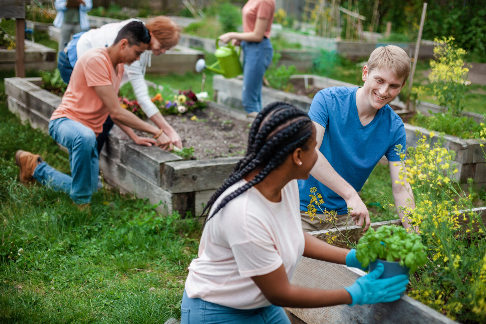
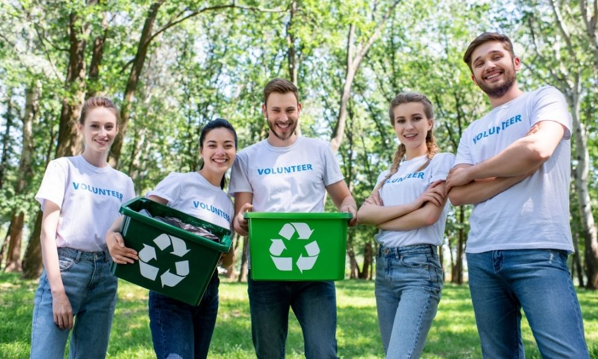

"Community climate action" is a term often used in discussions about climate change, but many people are unsure what it really means or how getting involved locally makes a difference. This page explains the main forms of community-led climate action and highlights practical, effective ways to take part through simple, collective efforts.
What Is Community Climate Action?
Community climate action is the collective effort of neighbours, local groups, schools, and small organisations to reduce emissions and build resilience at a local level. This includes shared projects such as tree planting, community gardens, and repair workshops, and is commonly measured by participation rates and the tonnes of carbon dioxide equivalent (tCO₂e) saved through local initiatives. Community action helps us understand how working together can achieve more than individuals acting alone.
Community climate action includes both grassroots and organised efforts. Grassroots action comes from residents starting small local projects, while organised efforts are run through councils, schools, and community groups that coordinate larger initiatives such as energy co-operatives, litter picks, and awareness campaigns. Understanding these forms of action is the first step toward getting involved and strengthening a community's response to climate change.
How It's Organised
The three main levels
Community climate action is grouped into three broad levels. Individual involvement covers the time and skills a person contributes, Group projects include shared initiatives run by local organisations, and Local policy covers the council decisions and funding that support community-wide change. Group projects are often what turns individual willingness into lasting local impact.
Why national averages mislead
National figures on volunteering or community projects are useful for comparing regions, but they do not reflect the wide differences between individual neighbourhoods. A community with an active climate group, supportive local council, and regular events can achieve far more than one where residents act alone without coordination. This is why local organising matters, and why understanding your own community's efforts is an important step towards reducing climate change.
Local Transport Initiatives

Local transport initiatives are one of the most visible forms of community climate action. Group cycling schemes, car-share networks, and campaigns for safer walking and cycling routes all reduce the emissions produced by frequent car journeys. Organising these initiatives collectively can reduce emissions immediately and make a meaningful contribution to protecting the local environment.
- Community cycle groups make short car journeys easier to replace with walking, cycling, or shared transport.
- Local campaigns for better bus and train links generally produce much lower carbon emissions per passenger than continued reliance on cars.
- Neighbourhood car-sharing schemes reduce fuel use, lower emissions, and help decrease local traffic congestion.
Community Energy Projects

Energy co-operatives and shared renewable projects contribute significantly to reducing a community's carbon emissions. The environmental impact depends on how the project is run, with locally owned renewable schemes producing far fewer emissions than continued reliance on fossil fuels. Simple actions such as joining an energy co-operative, attending planning meetings, and supporting local renewable proposals can help lower both energy costs and the community's carbon footprint.
Energy Co-operatives
Community-owned solar and wind projects allow residents to invest directly in local renewable generation, keeping the benefits and profits within the community while lowering carbon emissions.
Shared Retrofits
Group-buying schemes for insulation and efficient heating can significantly reduce the carbon emissions associated with household energy use, helping lower environmental impact across many homes at once.
Food & Growing Initiatives

Community gardens and local food schemes contribute significantly to reducing food-related greenhouse gas emissions. In general, locally grown, plant-based food has a lower environmental impact than food that requires long-distance transport and extensive land, water, and energy to produce. Organising shared growing spaces, food-sharing schemes, and reducing food waste together can help lower a community's carbon footprint while supporting a healthier local area.
- Setting up a community garden can significantly reduce the carbon emissions associated with food transport and production.
- Local food-sharing and surplus schemes help conserve the energy, water, and resources used to produce, transport, and prepare food.
- Organising communal meals, seed swaps, and shared storage are simple ways to reduce waste and support a more sustainable local food system.
Waste & Recycling Programmes

Waste may seem like a small part of a community's carbon footprint, but organised local action still has an important environmental impact. Reducing waste through repair cafés, community swap events, shared recycling points, and clean-up campaigns helps conserve natural resources and reduces the amount of waste sent to landfills. Proper local coordination is especially important, as contaminated recyclable materials often cannot be processed and may end up as general waste instead.
Community-run repair, reuse, and second-hand schemes have a greater environmental benefit than recycling alone, as they help avoid the emissions generated during the manufacturing and production of new goods.
Common Myths
Getting Involved
Getting involved in community climate action does not require completely changing your routine overnight. Making a few realistic and consistent contributions, such as joining a local group, attending a planning meeting, volunteering at an event, or supporting a shared project, can create a meaningful impact over time. Start with the activities that are easiest to join and gradually build more sustainable local habits.